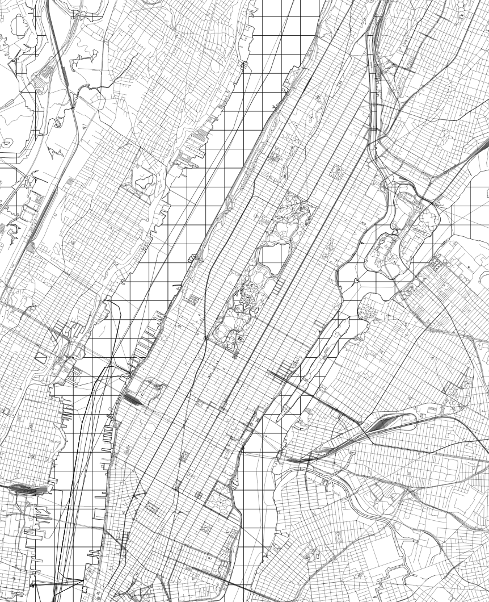

The SVG Exporter converts map data (as vector tiles) into the SVG file format. The exported file can be used for various kinds of digital fabrication or high quality printing. The source code of the SVG Exporter was used by the LA Times as a component of their Web Map Maker.
👉 Go to SVG Exporter
